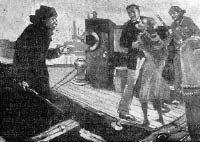
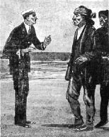
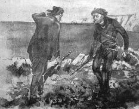
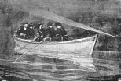
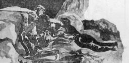

Sahilden bir kurşun menzili uzakta bulunmasına rağmen o zamanlar Kefken Adası ıssız bir adaydı. Ağaçlarla, taflanlarla örtülü idi. Eskiden kalma sarnıçlar vesaire vardı ama o günlerde adada sadece Fener görevlisi Hüseyin Çavuş ve bazen onun yanına gelip giden dostları ve yakınları oluyordu. Fakat 1920 yılının bir bahar sabahı İpsiz Recep, hepsi de silahlı adamlarıyla birlikte adaya çıkageldi. Recep Reis’in Hüseyin Çavuş’la on yıl öncesinden tanışıklıkları vardı. Korsanlığa ilk burada başlamıştı. Hüseyin Çavuş onu gördüğünde biraz daha yaşlanmış olduğunu ancak bir delikanlıyı kıskandıracak çevikliğinden ve hareketliliğinden hiçbir şey kaybetmemiş olduğunu fark etti. İki eski ahbap karşılaştıklarında yeni gelen misafir:
— Hüseyin Çavuş! Başka bi çare kalmaduğundan İşi çeteciliğe döktuk. Buraya da sana arkadaşluk etmeğa gelduk! Demişti.
Hüseyin çavuş “Hoş geldiniz” demekle yetindi. Ama belli ki pekte hoşlanmamıştı bu kanunsuz adamlardan. Ama yine de misafirdi. Kendilerine Fenerin altındaki iki binadan birini verdi. Fakat çete pekte misafir gibi görünmüyordu. Recep Reis Hüseyin Çavuş’a:
— Burada hem seninle komşu olacağız hem de tatlı tatlı kardaş kardaş geçineceğiz. Bizden hiç çekinma! Eğer uşaklardan biri sana kötü söyleyecek olursa hemen bana haber ver. Ben onun terbiyesini veririm!
Artık burada kalıcı oldukları anlaşılmıştı. Hüseyin Çavuş’un kendilerine gösterdiği yer de onlar için karargâh binası olacaktı.
Oradan doğru deniz kenarına, kayalıkların yanına geçtiler. Burada uşaklardan bazıları koyun çeviriyorlardı. Yandaki bir ağaçta da dört tane yüzülmüş koyun bacağı asılı idi. Hüseyin Çavuş’a da bu koyunlardan bir but kesip verdiler. Hüseyin Çavuş bunu alamamazlık edemezdi. Alıp Fenere döndü. Fenerde birkaç arkadaşı daha vardı. Fakat ne o, ne de arkadaşları bunlara el sürmediler. Sebep de bunun haram malı olduğunu düşünmüş olmalarıydı.
İki gün sonra Recep Reis bir münasebetle fenere geldi. Orada budun hâlâ asılı durduğunu görünce:
— Eti neden yemediniz? diye sordu.
Başka yemekleri olduğunu söyleyerek geçiştirmek istediler ama o işin farkına varmıştı:
— Yoksa vurgun malıdır, yenmesi haramdır diye mi yemediniz ula?
— Öyle değil!
— Bırakın bu kafayı da kokmadan yiyin eti! Allah’ın nimetini tepmek günahtır.
Bu bu sözleri kızgın kızgın söylüyordu.[45]
İlk büyük vurgun
İpsiz Recep adaya yerleştikten sonra açıktan açığa korsanlığa başlamıştı. Denizden geçen taka, yelkenli ve kayıkların yolunu kesiyor, bunları soyup duruyordu. Bir seferinde de büyük bir vurgun yaptı. Akçakocalı Genç Mehmed Efendi’nin mal yüklü iki takasını ele geçirip tayfalarını da esir etti.[46]
Ada tepelerinde bekleyip açık denizleri gözleyen nöbetçilerden biri Recep Reis’in yanına koşarak Şile açıklarında büyükçe bir geminin sahile yakın gelmeğe başladığını haber vermişti. Geminin Kefken önüne geldiği zaman taka ile üstüne gidip işini bitirmek çok yerinde olacaktı. Uşaklar vurgun olacak diye o andan itibaren sevinmeye başlamışlardı. Hep birlikte sahile koştular. Ne var ki tepeden görünen gemi sahil boyundan görünmüyordu. Araya Kefken üstündeki burun giriyordu.
Kolbaşı Mustafa ile Recep Reis adanın yüksek bir yerine çıkmışlardı. Gerçekten Şile açıklarından bir gemi sahile doğru dümen kırmış geliyordu. Anlaşılan kıyıdan kıyıdan yoluna devam edecekti. Şansları varsa gemi Kefken Adası önlerinden geçip gitmeğe çalışacaktı. O zaman taka ile üzerine gidilip koya çekilerek icabına bakılmak kolaylaşırdı.
Korsanlar takayı hazır hale getirdiler. Tüfeğini kavrayan sabırsızlık gösteriyordu. Gemi de feneri geçmişti. Sahil boyunca Kefken’e doğru yalpalayarak geliyordu.
Recep Reis:
— Haydeyn uşaklar! diye takaya atladı.
Takayla açılmışlardı. Maksatları oralarda yelkenli görüp geminin çekinmeden Kefken koyuna girmesini temin etmekti. Yemleme yapıyorlardı. Geminin üstüne sahilden gitmeyip açıktan önleyeceklerdi. Gemi artık kendi hizalarına gelmişti. Recep Reis’in takası birden bire meçhul geminin üzerine düşmüştü. Gemidekiler bir anda neye uğradıklarını şaşırdılar. Recep Reis tayfalara hep birden havaya ateş etmelerini emretti. Gemiyi olduğu yerde korkutarak durduracaklardı.
Silah sesleri umdukları tesiri göstermişti. Gemidekiler yelkenleri indirip durdular. Recep Reis ve arkadaşları gemiye yaklaştıklarında:
—Davranmayın! diye, silahları çevirmişlerdi. Uşaklardan üçü manifatura yüklü gemiye atıldılar. Tayfaların kollarını arkalarına bağlayıp hepsini birer ikişer ambara kapadılar. Gemiyi kendi idarelerine alarak açıklara götüreceklerdi. Burada içindeki eşyayı takalara aktarıp gemiyi batıracaklardı. Tayfalarını da birkaç saat öteye Sakarya’nın denize döküldüğü sahillere terk edeceklerdi.
Bir iki saat içinde her şey olup bitti. Müsadere edilen geminin İstanbul’dan Akçakoca’ya manifatura eşyası götürdüğü anlaşılmıştı. O zaman Akçaşehir’de denilen Akçakoca fazla uzakta değildi. Recep Reis gemiyi Karadeniz’in enginlerinde batırtmayı tercih etti. Elleri kolları bağlı tayfaları da Sakarya Nehri yakınlarına bıraktırdı. Hücuma uğrayanlar Recep Reis korsanlarının Kefken’i üs edindiklerini anlayamamışlardı. Onları İstanbul’dan Rize veya Trabzon taraflarına giden takacı Lazlar zannetmişlerdi.[47] Kefken Fenercisi Hüseyin Çavuş bu malın kıymetinin o zamanki para ile yirmi beş bin lira olduğunu söylemektedir. İpsiz Recep bu malları kendi adamları ile İstanbul’a gönderip üçüne beşine bakmadan, değerine aldırmadan sattırmıştı. Bu parayı da kendisine ana sermaye yapmıştı.
İpsiz Recep’in adamlarının sayısı gitgide artıyordu. Deniz nakliyatını da olduğu gibi kesmişti. Kendisine haraç vermeden bir tek taka, bir tek yelkenli bile geçmiyordu.[48]
Kefken’e yerleşen İpsiz Recep’in buraya gelmeden önce tasarladığı en önemli plan bu bölgede çıbanbaşı gibi her türlü cerahatın aktığı Şile Yeniköyü’nü basmaktı. Bu köy bölgede faaliyet gösteren Rum eşkıyası için insan ve lojistik destek açısından önemli bir kaynaktı. Hatta o zaman için oldukça mühim bir silah olan ve mitralyöz adı verilen çok namlulu silahlara bile sahip oldukları söyleniyordu. Rum eşkıyalar buradan zaman zaman şehir ve kasaba merkezlerine hatta Bostancı’ya ve Erenköy’e bile iniyorlardı.
Bostancı’da bir köşkü basarak Erşed ve Nidaî Bey isminde iki zatı öldürdükleri de dillerde destan olmuştu. Rum çetecilerin cinayetlerinde en fazla etkilenen yerlerin başında Kandıra köyleri de vardı. Kefken’e oldukça yakın olan Türk köylerini yağma ediyorlardı. Recep Reis, bütün bunların intikamını alıp acısını çıkaracaktı. Recep Reis’in adamları Yeniköy’e baskına hazırlanmaya başlamışlardı.
Mart-Nisan 1920/Rus gemisinin gasp edilmesi
Tam da bu günlerde bir sabah Karadeniz yine kuduruyordu. İpsiz Recep Reis Kefken Adası’na çekilmişti. Kayalıklar üzerinden denizi seyrederek av gözlüyordu. İlerden Kefken’e doğru büyük bir motorun geldiği görülüyordu. Motor dalgalar arasında limon kabuğu gibi yalpalayıp bata çıka yuvarlanaraktan geliyordu. Recep Reis memnun olmuştu. Motor görünüşe göre hayli büyüktü. Karşı taraftan gelmesine bakılacak olursa Rusya’dan geldiği anlaşılıyordu. Rusya’dan gelen bir motor hiçbir zaman boş olamazdı. Ya buğday veya arpa ya da daha kıymetli bir yükü olmalıydı. Recep Reis arkadaşlarına motoru karşılamalarını emretti. Zaten hava da bozuktu. Motorun Kefken Limanı’na uğrayarak deniz tehlikesini geçirmekten başka çaresi yoktu. Mademki av kendi ayağıyla üzerlerine geliyordu. Artık onu ürkütüp korkutmanın bir manası yoktu. Reis’in uşakları birer kaya arkasına saklanarak Kefken Limanı’na gelmekte olan motoru izlemeğe başladılar.
Motorda Rusya’da Komünist İhtilale karşı direnen General Vrangel’e ait bir bandıra vardı. Artık avın mahiyeti anlaşılmıştı. Vrangel İtilaf Devletleri hesabına çalışıyordu. Dolayısıyla Kuvay-ı Milliye’ye de düşman sayılırdı. Rus motoru bir şeyden haberi olmayarak bata çıka kendisini limana attı. Demir atıp selamete çıktıklarını zannetmişlerdi.
Beri yanda Recep Reis sandallarından birini hazırlattı. Sandala on iki silahlı uşak yerleştirdikten sonra dümene geçti. Tabiî böyle sorgusuz sualsiz limana gelen motora uğrayıp bir “Hoş geldiniz!” demek mutlaka gerekecekti. Yapılacak iş gayet basitti. Laz uşakları silahlarına davranarak içindekilerin ellerini ayaklarını bağlayıp esir alacaklardı. Ya da motoru zapt edip mürettebatını İstanbul’a iade edeceklerdi. Bu gibi eylemlerde genellikle böyle yapılmak adetten olmuştu.
Motorda bir de güzel kadın! ...
Motordakiler akşam karanlığında üzerlerine gelen sandalın kime ait olduğunu bilmediklerinden bordalardan Recep Reis’in üzerlerine gelen kayığa bakıp gülüşüyorlardı. Sandalla gelenler ya fenerci yahut motora alış veriş etmeğe gelen sahil ahalisinden olmalıydı. Fakat sandal motora yanaşıp da siyah elbiseliler namluları parlayan tüfek ve parabellum tabancaları ile tekneye sıçramaya başlayınca o zamana kadar Rusların gülen yüzleri ekşimişti.
—Eyvah, Lazlar!
Laz uşakları bağrışarak gemiye sıçradılar. İlk hamlede rast geldikleri tayfaları yere çökertip dizleriyle göğüslerine basarak kollarını arkalarına bağladılar.
Motor artık tamamen Recep Reis’in kontrolüne girmişti. Esirler arasında bir de güzel Rus kadını vardı. Bunları bir araya toplamışlardı. Ortalık ağlayan sızlayandan geçilmiyordu. Motorda tam 300 bin okka arpa vardı. Bu kadar zahire elbette her zaman olduğu gibi fakir fukaraya paylaştıracaktı. Kandıra sahillerindeki dul kadınlar bunu kendilerine Allah’ın bir lütfu olarak görüyorlardı.
Recep Reis arpaların karşı sahile nakledilmesini emretti. Onları sabah erkenden köylülere dağıttıracaklardı. Rus esirler de sorgulanmak üzere Kefken Adası’nın yalçın kayaları arasına çıkartıldı. Ruslar siyah elbiselilerin kendilerini kesmelerinden korkuyorlardı. Reis’in ayaklarına kapanarak yalvarıyorlardı.
Güzel Rus kadınının korkusu ise kocasının öldürülmesi idi. Saçını başını yolarak ağlayıp sızlıyordu. Sorgu sırası kocasına gelmişti. Adamı alıp Reis’e götüreceklerdi. Ancak kadın kocasına sımsıkı sarılmış, bırakmıyordu. Ağlayıp tepiniyordu.
Kadına ilişik edilemeyeceğinden...
Erkekler karşısında aslan kesilen Recep Reis’in tayfaları, Rus’u güzel karısının elinden bir türlü alamıyorlardı. Daha doğrusu elleriyle kadına değemiyorlardı bile. Malum! Recep Reis kadınlara ilişik edeni yaşatmıyordu. Nihayet Recep Reis üstü başı toz toprak içinde kalan kadının yanına geldi. Neden ağladığını sordu. Kadın, dünyada kocasından başka kimsesi kalmadığını, onu öldüreceklerinden korktuğunu söyleyerek Recep Reis’in ayaklarına kapandı. Recep Reis, az çok Rusça bildiğinden kadının ne söylemek istediğini anlamıştı. Onu tatlı sözlerle teselli etti. Sonra da yalnız motora el konulup hiçbir cana dokunulmayacağına dair söz verdi.

Rusların şaşkınlıkları yüzlerinden okunuyordu. Mantıklı olan kendilerinin ihbar edilebilecekleri düşüncesiyle imha edilmeleriydi. Ama onlar cana kıymamışlardı. Recep Reis Rusları bir iki gün mükemmel bir şekilde ağırladı. Ondan sonra da hepsini İstanbul’a giden gemilerden birine bindirerek gönderdi. Ancak onlar İstanbul’a varıp hayat korkuları ortadan kalkınca ilk iş olarak müttefik kuvvetler temsilciliğine giderek şikâyette bulundular. Beri tarafta ise arpalar hemen köylüye dağıtıldı.[49]
Nisan 1920/Yeniköy Rumlarına baskın
Yeniköy açıklarında baskın hazırlığı
Güzel bir Nisan gecesi Recep Reis uşaklarına ansızın hazır olmalarını emretti. Uşaklar bir baskın olacağını anlamışlardı ama neresi basılacak onu pek kestiremiyorlardı. Recep Reis baskına gidilecek yeri söylememişti onun tabiatı öyle idi. Yarı yolda uşakları toplayarak ortalarına geçip kararını bildirir ve hepsine ayrı ayrı talimat verirdi.
Uşakların tüfekleri mükemmeldi. Cephaneleri de yeterli idi. Heyecan verici bir baskın yapılırsa hepsinin keyfi yerine gelmiş olacaktı.
Haydi uşaklar marş!
Hazırlıklar fazla uzun sürmedi. Gözlerini daldan budaktan esirgemeyen İpsiz’in uşakları her hangi bir operasyon için zaten sürekli hazır kıta idiler. Recep Reis bir köşede sessizce hazırlıkları takip ediyordu. Tüfeklerin yağlanması işi bittikten sonra birden bire:
— Haydi, uşaklar marş?
Deyip mavzerini omuzlayarak dışarıya çıktı. Siyah elbiseli tayfalar da onu takip ettiler. Hava da oldukça güzeldi.
Recep Reis ile uşakları sağ yanı meşe ağaçları ile kaplı geniş yola dizilmişlerdi. Karanlıkta oldukça dikkatli ilerliyorlardı. Bu gidiş Şile üzerine gibi görünüyordu ama Şile’nin neresi? Birazdan o da anlaşıldı.
Baskın Yeniköy’e idi.[50] Şile Yeniköy ortalığı kasıp kavuran bölgedeki Türk köylerini sürekli taciz edip cinayetler işleyen Rum eşkıyalarıyla doluydu. İstanbul hükümeti ve jandarmaları da bunlara dayanamıyorlardı.
Anlaşılan, Koca Reis bu gece yine İstanbul hükümeti velveleye düşürmek istiyordu. Artık Yeniköy’e yaklaşmışlardı. Köyün ışıkları uzaktan seçiliyordu. Bir tepe üzerine çıktıklarında İpsiz Recep sayıları seksen beşe ulaşan uşaklarını etrafına topladı. Öncelikli olarak sigara içmek kesinlikle yasaktı. Bir çakmak bile çakılmayacaktı. Çünkü Yeniköy eşkıyaları köyün dört etrafına nöbetçiler dikiyorlardı. Küçük bir sigara ateşi veya çakmak parıltısı onların alarm haline geçmesi için yeterli idi. Buradaki eşkıyalarda muntazam bir orduda olabilecek donanımlı silahlar mevcuttu. Baskın basanındı ama her halükarda ihtiyatı elden bırakmamalıydı. Ansızın köyü sarıp çala kurşun azılı Rum eşkıyadan eser bırakılmayacaktı. Bu baskın Domuzdereli eşkıyalara yapılanı bile aratacak gibi görünüyordu. Civardaki mazlum Türk köyleri de kurtulmuş olacaktı. Recep Reis uşaklara birer birer vazifelerini taksim etti. En riskli vazifeler Kolbaşı Mahmut’la Kör Hasan’ınki idi. Köyün alt başını tutacaklardı. Recep Reis, cesur uşaklarıyla merkezde bulunacaktı. Üst başa da güvendiklerinden bir uşağı kol kumandanı tayin etmişti. Köye usul usul yanaşacak ve şafak sökmeden köye dört yandan ateş yağdıracaklardı.
Eyvah! eşkıyadan eser yok
Öyle de yapıldı. Recep Reis ve çetesi sabaha karşı köyü bastı. Korkutmak için havaya silahlar sıkıldı önce. Fakat köyden karşılık veren tek kişi yoktu. Yeniköy eşkıyası Reis’in baskın yapacağını haber almış olmalıydı. Köyden savuşup gitmişlerdi. Ama bu bir tuzak ta olabilirdi. Onun için içeriye birkaç cesur uşak gönderdi.
Köyde hiçbir erkek yoktu. Koca köyü boş bırakıp gitmişlerdi. Nasılsa Recep Reis çoluk çocuk, karı kıza ilişecek cinsten bir adam değildi. Köyde kimseleri bulamayınca derin derin solumaya başlayan Recep Reis öfkesinden yerinde duramıyordu. Bu kadar gizli tutup candan arkadaşlarına bile söylemediği hâlde şu eşkıyalar kendisinin geleceğini nereden bilmişlerdi? Fakat Reis bir müddet daha Kefken’e dönmedi. Bir iki saat daha açıta siperlere yattılar. Elbette köyden dağa kaçan eşkıyaya haber gidecekti. Onlar da İpsiz çekildi düşüncesiyle tekrar köye ineceklerdi. İşte o zaman Reis gündüz de olsa tüm tehlikesine rağmen köyü basacaktı. Ama olmadı, eşkıya da hesabını ona göre yapmıştı.[51]
Nisan 1920/Yunan gemisine el koyma
Yeniköy eşkıyasına karşı yapılan bu operasyon başarısız gibi görünse bile bölgede ki Türk köylerine güven ve cesaret verip yurtlarını terk etmemeleri açısından oldukça yararlı oldu. Rumlar ise enselerinde İpsiz Recep tehlikesinin var olduğunu bir kez daha hatırlamışlardı. Çeteciler çevredeki Türk köylüsüne biraz sabır ve cesaret verdikten sonra dönüşlerinde Küçükağız mevkiinde içi silah ve erzak yüklü Yunan gemisinin yük boşaltmakta olduğunu fark ettiler. Kolaylıkla teslim alınan gemi Kefken Adası’na getirildi ve içindeki cephane ve erzak taksim edildi.[52]
7 Nisan 1920/Amerikan gemisinin ele geçirilmesi ve Alaplı baskını
Recep Reis İngilizlerin Ereğli’ye çıkarak depolardaki beylik silahları ve cephaneleri alıp gitmelerine kızmıştı. Ereğli’ye bir baskın yapmak istiyordu. Ereğli’deki İngilizlere hadlerini bildirecekti.
Recep Reis’e Ereğli Limanı’nda bir Amerikan binbaşısının kumandası altında büyük bir gemi bulunduğu haber verilmişti. Gemide Ermenistan’a gönderilen erzak, manifatura ve saire bulunuyordu.
Reis doğrudan doğruya bir baskın yaparak Amerikan gemisindeki eşyanın alınmasını planladı. Aynı zamanda civarda Alaplı’ya da bir baskın yapılması kararlaştırılmıştı. Çünkü her gün sayıları artan kumandası altındaki millî kuvvetlere erzak yetiştirilmesi gerekiyordu. Öyleyse kendi yağları ile kavrulabilmeliydiler.
Recep Reis’in güvendiği adamlarından bu işi yapabilecek Kara Mahmud isminde bir kolbaşısı vardı. Kara Mahmud cesur bir Laz uşağıydı. Gözünü daldan budaktan saklamazdı. Ereğli’de İstanbul hükümetinin tayin ettiği idareciler bulunuyordu. Jandarmalar da yine İstanbul’a tabi idi. Recep Reis Alaplı baskınından hem bir miktar dünyalık almak istiyor hem de jandarma karakolundaki silahları elde ederek çeteye yeni giren arkadaşlarına dağıtmayı tasavvur ediyordu. Bu suretle para ve silah ihtiyacını kısmen gidereceğini düşünüyordu.
Alaplı’yı kim basar?
Recep Reis kararını vermişti. Ereğli’deki gemi soyulduktan sonra hemen Alaplı basılacaktı. Bu işi Kara Mahmud’dan başkasının yapamayacağını biliyordu. Kara Mahmud Alaplı’yı basmasını söylemeden önce arkadaşları arasında bir tecrübe yapacaktı. Çeteleri etrafına topladı. Kefken Adası’nda kuzu çevirip, çalı çırpıda kabartılan kahvelerini de içtikten sonra Reis, Mahmud’a bakıp:
— Ey Mahmud! Alaplı’yı basmak lazım. Buna kim gider dersin?
Mahmud hemen cevap verdi:
— Ben Reis! .
— Kaç tüfek istersin? Bilirsin ki Alaplı’da jandarma karakolları vardur.
— Otuz tüfek yeter Reis!
Recep Reis otuz tüfeği az gördü. Yapılacak iki iş bulunuyordu.
— Elli tüfekli vereceğim sağa uşağum. Hayde göreyim seni! Alapliyi bas, gözune kesdirduklerini dağa kaldur, haburaya getur! dedi.
Kara Mahmud vakit geçirmeden yola çıkmak istiyordu. Tepeden tırnağa kadar silahlı arkadaşları hazır duruyordu.
Kara Mahmud hareket ediyor!
Kara Mahmud uşaklardan elli kişi seçti. Ereğli, Alaplı şurada sayılırdı. Ereğli’ye takalarla yanaşılacaktı. Amerikan gemisinin işi halledildikten sonra ganimetler takalara yüklenecek sonra da Alaplı’ya saldırılacaktı. Alaplı’dan bazı zenginler dağa kaldırılacak fidye vermemekte ısrar edenler Kefken’e Recep Reis’e götürülecekti. Kara Mahmud’un elli kişilik çetesi birer ikişer takalara doluştu. Hava oldukça güzeldi. Kefken burnundan hızlı bir şekilde açıldılar. Havanın rüzgârlı olması sebebiyle takalar Ereğli’ye bir-iki saate ulaştı. Amerikan gemisi orada yatıyordu. Kumandanı da Ereğli’deki Rum evlerinden birine bezik oynamaya gitmiş olmalıydı. Ereğli Limanı’nda birçok gemi vardı. Bunların gözleri önünde bir Amerikan gemisini soymak İpsiz çetesi için oldukça hoş olacaktı. Bu sayede üç gün önce Ereğli’ye gelerek Türklerin silahlarını toplayıp giden İngiliz ve Fransız torpidolarına iyi bir ders verilmiş olacaktı. Kara Mahmud takaları doğrudan doğruya Amerikan gemisinin üzerine sevk etti. Amerikan gemisinin tayfaları hiçbir şeyden haberleri olmadığı için vapur güvertesinden denizi yararak gelen takalara bakıyorlardı.
“Ha uşaklar göreyim sizi!”
Kara Mahmud’la elli arkadaşının mavzerleri takalarda saklı idi. Gemiye yanaşmadan silahlarını gösterecek değillerdi. Zaten daha önce denizde iken sözleşmişlerdi. Takaların biri geminin açığında duracak diğeri yanaşıp birden bire silahlara davranarak yukarıya tırmanacaklardı. Mukabele edenler olursa ses çıkarttırmadan haklarından gelinecekti. Bu emir kesindi.
Takanın biri Amerikan bandıralı vapurun açığında kalmıştı. Kara Mahmud daha önce soyduğu “Konstantin” vapuruna da aynı planı tatbik etmişti. Yalnız Konstantin vapurunun içinde tebdil-i kıyafet ederek Batum’dan binmiş adamları da vardı. Bu yüzden işlerini daha emniyetli görmüşlerdi. Fakat bu defa Amerikan sancağını taşıyan gemide durum farklıydı.
Taka yavaş yavaş gemiye yanaştı. Tesadüfen Amerikan vapurunun iskelesi de denize indirilmiş bulunuyordu. Gemiden takaya bakanlar az sonra başlarına gelecekten habersizdiler. Kim bilir ne istiyorlar? diyerek hayretle başları sarılı siyah çuha elbiseli Laz uşaklarına bakıyorlardı.
Kara Mahmud, gemiye yanaşan takadaydı. İskeleye kanca atınca; “Ha uşaklar!” diye bir nara atıp gemiye sıçradı. Silahını kapan iskeleye tırmanmıştı. Vapurdakiler nihayet işi anladılar. İskeleden tırmanan korkunç yüzlü, bıçaklı Lazlardan ürkerek bağrışa çağrışa öteye beriye kaçmaya başladılar. Zaten geminin kumandanı yoktu. Tayfaların çoğu da Rum’du. Kara Mahmud arkadaşlarını geçit yollarını tutmaya sevk etti.
Laz Falakası
Öteki takanın yardımına lüzum bile kalmamıştı. Kara Mahmud gemiden mukavemet göreceğini zannederek ona göre tertibat almışken tam aksine Rum tayfalar korkularından ellerine sarılıyor ayaklarını öpüyorlardı.
Yirmi beş Laz uşağı, tayfaları beş dakika içinde bağlamışlardı. İşlerine yarayan manifatura, kumaş, şeker, kahve, pirinç gibi malzemeleri çuval çuval takalara yerleştirdiler.
Amerikan bandıralı geminin tayfaları korkularından titriyorlardı. Lazlar malları aldıktan sonra kendilerini kesip doğrarlarsa bunlardan hesap bile sorulamayacaktı. Hepsinin hayatı Kara Mahmud’un elinde idi. Fakat Mahmud Ağa ayaklarına kapanarak yalvarıp yakaran Rumların canlarına dokunmak istemedi. Silahsız adamları öldürmeyi mertliğine yakıştıramamıştı. Fakat işine yarayan eşya ve malzemeleri aldıktan sonra çekilip gitmeyi de uygun bulmadı. Uşaklarını etrafına topladı. Onların fikirlerini almak istiyordu.
Her uşak ayrı ayrı görüş belirtiyordu. Biri, “elleri kolları bağlı denize atalım!” derken, başkası, “boğazlarından kesmeyi” teklif ediyordu. Fakat Kara Mahmud’un fikri tamamen farklıydı. Tutsakların ayak tabanlarını ve kıçlarını iyice kabartarak İngilizlere gönderecekti. Bu bir anlamda meydan okumaydı. Tozluğundan kırbacını çıkardı. İki uşağa işaret etti.:
— Tutun ha şunların ayaklarını bakayım!
Uşaklar yerde kıvranan tayfaları birer birer tutup kolbaşının önüne sürüklüyorlardı. O da kırbaçla tabanlarını şişirerek bırakıyordu. Gemidekilerin hepsini mükemmel falakaya çekip işini bitirmişti. Eşyaları da zaten takalara yüklemişlerdi. Kara Mahmud takasına bineceği zaman acıdan kıvrananlara:
— Ha gidin, İngiliz’e haber edin ula! Diyordu.
Alaplı köyüne baskın
Kolbaşı Mahmud Ağa elli uşağıyla Alaplı sahillerinin kuytu bir tarafına çıkmıştı. Takalara; “Haydi selametle!”, deyip arkadaşlarını alarak fundalıklar içine dalmıştı. Alaplı az ilerideydi. Mahmud Reis ile arkadaşları ana yoldan geçerek Alaplı pazarına gidenleri birer birer görüyorlardı.
Alaplı’da her Cuma büyük pazar kuruluyordu. Kara Mahmud’un Recep Reis’ten aldığı talimat köylüye ilişmemek yolunda idi. Uşaklar jandarma karakolunu saracaklar, jandarmaların silahlarını aldıktan sonra köyün zenginlerini vurup, dişe gelenlerini de dağa kaldıracaklardı.
Mahmud Reis fundalıklarda, şurada burada gizlendikten sonra pazarın en kalabalık sırasında Alaplı kenarına varmıştı. Uşaklarını üç kola ayırmıştı. Pusuya yatarak gedik yerlerini tutacaklardı. Girenlere seslenmeyeceklerdi. Fakat çıkmak isteyenleri baskın sonuna kadar alıkoyacaklardı.
Bir kol jandarma karakolunu saracaktı. İstanbul Hükumeti karakolunu basmak hayli ilginç olmalıydı. Düne kadar jandarma baskınından kaçan eşkıyalar bir jandarma karakolu basıyordu. Mahmud Reis doğrudan koğuşa daldı:
— Teslim olun! Diye haykırmıştı. Jandarmalar neye uğradıklarını şaşırmışlardı.
— Aman ağam teslimiz! Diyerek ellerini yukarıya kaldırdılar. Mahmud Ağa, iki arkadaşının tüfekleri jandarmaya çevrilmiş olduğu halde duvarda asılı duran mavzeri aldı. Sonra jandarmaların kollarını sımsıkı bağladı. Kımıldanacak hallerini kalmamıştı.
Pazar nasıl basılır?
Mahmud Reis’in karakolda attığı üç el silah pazaryerini soyacak uşaklara işaretti. Ellerinde mavzerleriyle Laz çeteleri Alaplı pazarını allak bullak ettiler. Onlar köylülerden bir şey istemiyorlardı. Köylüleri bir kenara ayırıyorlardı. Zengin çorbacılarla,[53] pazar sahiplerini yarım saat içinde istedikleri gibi soymuşlardı. Büyük bir ganimet elde edilmişti. Recep Reisin uşakları birkaç aylık harçlıklarını ilk hamlede temin etmişlerdi. Beri tarafta jandarmaların silahlarını alan Kara Mahmud da işini bitirip pazaryerine gitti. İşlerini görünceye kadar jandarmaların başlarına iki açıkgöz nöbetçi de bırakmıştı. Bu nöbetçiler baskın sonunda kolbaşına iltihak edeceklerdi. Pazaryerinde iş bittikten sonra Alaplı merkezinde göze batan evlerde birer birer soyuldu.
Dağa kaldırılanlar ve bulunamayanlar
Kolbaşı Mahmud Ağa üç beş kişi ile zenginlerden Eyüb Efendi’nin evine gitmişti. Eyüb Efendi’den birkaç bin lira birden koparacaklarını ümit ediyordu. Fakat Eyüb Efendi’yi bulmak mümkün olamamıştı. Eyüb Efendi’nin şansı vardı. İstanbul’a gitmişti.
İşler bitirildikten sonra artık pazarda çok durmaya gerek görülmedi. Zaten uşaklar dağa kaldırılacakları bir araya toplamışlardı. Mahmud Reis hepsini alarak Alaplı’dan kayıp oldu. Beraberlerinde götürdüklerini doğru Kefken’e aşırıyorlardı. Bunlar çok zengin olduklarından verecekleri fidye-i necatın (kurtuluş fidyesi) miktarını Kara Mahmud tayin edemezdi.[54] Bu mesele, İpsiz Recep Reis’e aitti. Daha doğrusu Reis’in hakkı idi.[55] İpsiz Recep bu şekilde zahire ve manifatura yüklü bir iki gemi daha vurdu. Boş gemileri de açıklarda batırdı. Tayfalarını da karaya çıkartarak:
— Gidin, İstanbul’daki İngilizlerle Sadrazam Ferid Paşa’ya selam söyleyin! Diyerek salıverdi.
Ganimetler dul kadınlara ve fakir köylülere
Vurgunlardan hayli zahire ve manifatura eşyası ele geçmişti. Reis bunları köylerdeki dul ve kimsesiz kadınlara dağıtmak sevaplı iş diye düşündü. Arkadaşları bu dağıtımları yaparken de mavzerini kucağına alıp bir köşeye oturarak dul kadınların sevindiklerini gözleriyle görmekten zevk duyacaktı. İpsiz’in zahire ve basma dağıttığını duyan köylü kadınlar yalın ayak başı kabak yoksul çocuklarını ellerinden tutarak Kefken sahiline getiriyorlardı. Recep Reis bir köşeden dağıtım işlerine seyrediyordu. Kadın, kızan, çoluk çocuk İpsiz’e dualar ederek gidiyorlardı.[56]
20 Nisan 1920/Bir Yunan gemisinin müsaderesi ve mebusların nakli
Kefken Adası sahilleri tamamıyla İpsiz Recep’e kalmıştı. Yunanlılar, vapur, gemi, motor ne buluyorlarsa hepsini kömür Zonguldak ve Ereğli’deki kömür işletmelerine kömür ticaretine gönderiyorlardı. Bu gemilerin hepsi de Yunan bandırası taşıyordu. Recep Reis’in böyle göz göre Yunanlılara para kazandıracak işleri yaptırması düşünülemezdi. Anadolu’nun güneybatı kısmını kasıp kavurduktan sonra Bursa vilayetine kadar dayanan Yunanlılara Karadeniz sahillerinde hayat hakkı tanıması mümkün değildi. Reis gelip geçen gemileri çevirmeğe başlamıştı. Hele birer ikişer bin tonluk dubalar Reis’in önünden hiç kaçamıyorlardı. Bu dubalar kömür yüklendikleri zaman bir römorkör tarafından çekiliyorlardı. Bu suretle de saatte üç mil kadar yol almak mümkün oluyordu. Deniz hava baymağa başladığı zaman yelkenliler, dubalar mutlaka Kefken’e uğramak mecburiyetinde kalıyorlardı. Kefken’e uğrayanların nasıl bir akıbetle karşılaşacaklarını ise söylemeğe gerek yok; hepsi de Recep Reis’in malı oluyorlardı.[57] 19 Nisan 1920 günü de Zonguldak’tan dubasına kömür yükleyerek İstanbul’a götürmekte olan büyük bir Yunan motoru havanın birden bire bozması üzerine Kefken Limanı’na sığınmıştı. İpsiz Recep’in adamları da motoru müsadere etmiş, mürettebatını da göz hapsine almıştı.
Bu sırada İstanbul’dan gelen bir kısım mebus Kandıra’da beklemekteydi. Çünkü Anzavur güçleri Bolu’yu ele geçirmişlerdi. 20 Nisan 1920 günü Ankara’da bulunan Yunus Nadi Bey’le telgraf görüşmesi yapılmıştı. Yunus Nadi Bey millî kuvvetlerin Anzavur asilerini mağlup ederek üstünlüğü ele geçirdiğini ve Ankara yolunun bir iki gün içerisinde açılacağını endişe etmeden sabır gösterilmesini tavsiye ediyordu. Yunus Nadi Bey’in verdiği haberler etrafa yayılmış ve Ankara yolcuları rahat bir nefes almışlardı. Fakat ertesi gün Bolu’nun Anzavur kuvvetleri tarafından ikinci defa işgal edilme haberleri gelince aralarında gazetecilerin de bulunduğu 60 kişilik Ankara yolcuları kafilesinin Zonguldak veya İnebolu’ya kaçırılmasına karar verildi. Fakat Zonguldak Fransızlar tarafından işgal edilmişti.
Kefken’den de deniz yoluyla gidilebilecek araca ihtiyaç vardı
Ereğli henüz işgal edilmediğinden burasının en emin bir yer olacağı düşünülerek yolcuların Kefken’den Ereğli’ye nakledilmelerine karar verildi. Bu nakil işini Kefken ve civarında yerleşmiş ve adeta bir beylik kurmuş olan İpsiz Recep ile görüşmek üzere Recep’in dostlarından Yüzbaşı Raif Bey’in gönderilmesi uygun görülmüştü. Raif Bey’e gazetecilerden Muhiddin Bey’de refakat ederek Kefken’e gitmişler. Recep Ağa ile misafir olarak vaziyeti görüşmüşlerdi.
İpsiz Recep, kafileyi Ereğli’ye nakletmek için yeterli sayıda takanın mevcut olduğunu ve Kefken’e gelecek bu zevatı hemen Ereğli’ye nakledeceğini vaat etmişti. Kafile şafakla beraber Adapazarı’ndan yola çıkmış, 7-8 km kadar Kandıra’dan uzaklaşınca yollarını kuzeye doğru çevirerek Erikli Köyü’ne ve oradan da Ali Rıza Bey’in kuvvetleriyle buluşarak Kefken’e gitmişlerdi. Kefken’e gelen Ankara yolcuları İpsiz Recep tarafından bir gün önce el konulan Yunan gemisine bindirilerek yanlarına da birkaç silahlı muhafız verilerek Ereğli’ye gönderildiler.[58]
Mayıs 1920/Yunanlıların Kandıra’ya gelişi
İngilizlerin 1920 Eylülü başlarından itibaren İzmit ve havalisinden çekilmesiyle bölgeyi bilfiil işgal eden Yunan kuvvetleri, henüz İngilizlerin kontrolü altındayken de buralarda operasyonlar yapıyorlardı. 1920 Mayısında da Kandıra ve havalisine gelmişler Müslüman ahaliye karşı birçok cinayet ve baskılarda bulunmuşlardı.[59]
Yunanlıların Kandıra istikametine doğru geldiği haberini alan Kandıra kaymakamı çareyi bölgenin en önemli silahlı gücü olarak düşündüğü İpsiz Recep’e mektup göndermekte bulmuştu. İpsiz Recep mektubu okuttuktan sonra Fenerci Hüseyin Çavuş’un yanına gitti:
— Yunan Kandıra’yı işgal etmek üzere İzmit’ten yola çıkmış. Kaymakam yardım istiyor, Yunan’ı Kandıra’ya sokmamak için gayret göstermemizi yazıyor, dedi.
—Ne yapacaksın?
—Elbet hemen gideceğim, elimizden gelen gayreti göstereceğim.
Hüseyin Çavuş şaşırmıştı. Eğer Yunanlılar hakikaten Kandıra’yı işgal etmek için oraya kuvvet göndermişlerse bu kuvvetin en azından birkaç bin kişilik olması gerekirdi. İpsiz Recep bir avuç çetesiyle bunlara nasıl karşı koyabilirdi?
Hüseyin Çavuş bunu kendisine söylediğinde o, hiç oralı olmadı. Hemen gideceğini söyleyerek tayfalarını toplamaya başladı. Bütün hazırlık ve planlarını yaptıktan sonra yola çıktı. İzmit’ten gelirlerken yollarını kesecekti. Bunlar kol halinde geldiklerinden pusulara düşürüp yıldırma taktiği uygulayacaktı. Köprülere sabotaj yapacaktı. Vur kaç yaparak en azından büyük zayiat verdirmiş olacaktı.
…
Ne var ki adaya adeta teessüründen kahrolmuş bir halde geri döndü. Kaymakamdan haber geç gelmişti. Düşman, Kandıra’ya onlardan önce varmış bu yüzden bir şey yapılamamıştı. Yunanlılar hem Kandıra’yı hem de o çevreyi büyük bir kuvvetle işgal etmiş bulunuyorlardı. Top, ağır makineli tüfek gibi ağır silâhlarını da getirmişlerdi.[60]
Fakat Yunanlıların bu gelişleri işgal amaçlı değil yıldırma maksatlı olmalıydı. Çünkü daha sonraki dönemlerde de sık sık gelip halka yaptıkları bir takım zulüm ve işkencelerden sonra ya kendiliklerinden ya da çetelerin baskılarından dolayı geri çekilmişlerdi.
18 Mayıs 1920/Kefken baskını
Kefken baskını İpsiz Recep’in hayatında önemli bir ayrıntıdır. Üzerine artık savaş gemisi gönderilecek kadar güç ve ün kazanmıştır. Kukla İstanbul rejimi ve işgal güçleri artık kendisinden rahatsız olmaya başlamışlardır. Fakat İpsiz Recep Kefken’de o kadar yüreklere su serpecek işler yapmaktadır ki onu etkisiz hale getirmek için üzerine gönderilen kuvvetler bile ondan etkilenebilmektedir.
Aslında hadisenin temelinde Kocaeli yarımadasındaki terörün merkez üssü haline gelen Şile-Yeniköy Rumları bulunmaktaydı. Yeniköylüler estirdikleri terörün önündeki en büyük engel olan İpsiz Recep’in bir gün nasıl olsa kendilerini ansızın bastıracağını biliyorlardı. Bunun için köyden ileri gelenleri toparlayarak doğru İstanbul’a Yunan ve İngiliz kumandanlarına giderek; “Kefken’de İpsiz Recep Reis Kuvay-ı Milliye adına köyümüzü basıyor. Çoluk çocuğa taarruz ediyor” şeklinde şikâyette bulundular.
Ereğli liman Reisi Nazmi Bey hatıralarında bu şikâyet konusunun gerçeği yansıtmadığını şu ifadelerle ortaya koymaktadır:
“Yalan söylemişlerdi. Bir kere Recep Reis mertçe, erkeklerle çarpışan bir kahramandı. Yanında kadınlara kızlara ilişmek değil yan gözle bakmalarına bile müsaade etmezdi. Onun bu tabiatı memleketinde bile meşhurdu. Silahla uçkur bir elde durmaz, diye fenalığa sapanları berbat ediyordu. Nerede kaldı ki köylerdeki erkeği kaçmış kadınlara tecavüz ettirecekti?”
İngilizlerin de bu konuda Damat Ferid’i sıkıştırması üzerine Damat Ferid Meclis-i Vükelâ’yı [Bakanlar Kurulu] toplayıp İngilizlerin şikâyetini görüşmeye açtı. Bir yandan da İstanbul’da çıkan Peyam Sabah, Tahidromos, Teologos gazeteleri İpsiz Reis’le ilgili olarak yayınlar yapıyorlardı. Hükümeti Recep Reis’in hakkından gelinmesi için sıkıştırıyorlardı. Meclis-i Vükelâ’dan İpsiz Recep’in üzerine gidilmesi kararı çıkmış ancak bu işi görecek teçhizatlı bir gemi mevcut değildi. Çünkü mütareke hükümleri gereği büyük küçük tüm savaş gemileri kullanılamaz hale getirilmişti. İngilizlerden izin alındı ve Kemal Reis ismini taşıyan bir gambota[61] geçici olarak top takıldı.[62] Oysa aynı gambot, tam bir yıl önce yani 19 Mayıs 1919’da Yunanlıların İzmir’i işgalinden cesaret alarak Müslüman komşularını katliama hazırlanan Ayvalık Rumlarını engellemek ve bölgenin güvenliğini temin etmek amacıyla Ayvalık sahillerine gönderilmek istenmiş, ancak İngilizler buna izin vermemişlerdi.[63]
Kemal Reis Gambotu’na Müttefik Komutanlığı’nca izin çıktıktan ve top takıldıktan sonra ise bu gemi ile İpsiz Recep çetesini tenkile gidecek Jandarma askerlerinin yazımına geçildi.
Akçakocalı Bekir Sıtkı’nın Kefken baskını anısı
Bekir Sıtkı, Çanakkale gazisi idi ve jandarma karakol komutanı olmak üzere Beylerbeyi’ndeki Jandarma Karakol Kumandanları Mektebi’nde 67 arkadaşı ile birlikte 6 aylık kursa devam ediyordu. Akçakocalı olması sebebiyle İpsiz Recep adını duymuş ve İstanbul’dan Akçakoca’ya mal getirip götüren bir kaç motor ve takayı soyduğunu işittiğinden ondan nefret ediyordu. Bir hafta sonu izninden döndüğünde arkadaşları ona kendilerinin İpsiz Recep’i tenkil etmeye gidecek guruba dahil olduklarını onun da adını yazdırmasını önerdiler.
Bu haber onu çok sevindirmişti. Üstelik İpsiz Recep’i tenkil ettikten sonra elbette bir yolunu bulup Anadolu’ya geçecekti. Arkadaşları da aynı düşüncede idiler.
Hemen müdürün yanına çıktı. Akçakocalı olduğunu, Kefken Adası’nı de iyi bildiğinden bu guruba dâhil edilmek istediğini söyledi ve kabul edildi. Ertesi günü bütün jandarmalarla birlikte ona da bir mavzer ile yüz fişek verildi. Bir römorköre binerek Haliç’te bulunan Kemal Reis gambotuna geçtiler. Ertesi sabah da erkenden yola çıkarak Karadeniz’e açıldılar.
Jandarmaların sayısı 80 civarına ulaşmıştı. Gambottaki jandarmaların kumandanı Jandarma Efrâd-ı Cedîde Mektebi talim heyetinden Mülazım-ı sâni M. Eşref’ti.
Mayıs ayının 16. Pazartesi gecesi Kemal Reis Gambotu ile Kefken Adası civarlarında meşhur eşkıya İpsiz Recep çetesinin takibine hareket edildiğinde gündüz öğleden sonra saat iki civarlarında Kefken Adası yakınında Cebeci köyü yakınlarında gambot demirleyerek bütün jandarma müfrezesi geminin kamaralarına yerleştirildi. Bekir Sıtkı Efendi ise bu çevreyi iyi bildiğinden kaptan köşküne alınmıştı.
Akabinde Kefken Adası yakınlarındaki Cebeci köyü’nün ihtiyar heyeti ile jandarma karakol kumandanı ve varsa liman reisi de alınarak gemiye getirilmek üzere dört bahriye neferi, Yüzbaşı Rıza Efendi kumandasında gambottan bir filika ile gönderildi. Yarım saat sonra Cebeci köyü ileri gelenlerinden Hüseyin oğlu Nazif Ağa ile Mehmed oğlu Hamit gemiye geldiler. Kendilerine bu civarlarda ne gibi bir vukuat olduğunu eşkıya İpsiz Recep’in ne tarafta bulunduğu gibi sorular soruldu. Tahkikat neticesinde Kuvay-ı Milliye adına birkaç defalar ahaliden para ve zahire aldıklarını söylediler. İpsiz Recep hakkında bir şeyden malumatları olmamakla beraber, tahminen beş-altı gün önce bir Fransız römorkörünün birkaç zabit, bir binbaşı ve birçok askerle birlikte Cebeci köyü civarından Erikli istikametine doğru gittiklerini ve başka malumatları olmadıklarını bildirdiler. Bu şahıslar bilahare köylerine gönderildi. Dürbünle ada taranıyor fakat insan olarak hiç kimse görünmüyordu. Bir müddet sonra Kefken Adası koyunun iç kısımlarında dört taka ile bir sandal olduğu görüldü.
Bekir Sıtkı Efendi geminin kaptanı Hacı Tahir Bey’e bu taka ve kayıkların korsanlara ait olabileceğini kendilerinin de pusuya yatmış olmalarının muhtemel olduğunu söyledi. Fakat Hacı Tahir Bey aynı kanaatte değildi:
— Bunlar korsan değil, balıkçı tekneleri olmalıdır. Balıkçılar bütün gece balık tutmuş, şimdi de uyuyorlardır, dedi
Bir taraftan da Kemal Reis Gambotu adaya iyiden iyiye sokulmaya devam ediyordu. İyice yaklaştıktan sonra da demir atmak emrini verildi. Bekir Sıtkı aynı uyarıları yaptıysa da neticede muhatabı geminin süvarisi kendisi ise basit bir jandarma eri idi. Arkasından gambot süvarisi bir kayık indirilmesini, dört kürekçi bir dümenci bahriyeli ile on jandarmanın buna binerek adaya çıkmalarını ve bir keşif hareketinde bulunmalarını emretti. Mülâzım Eşref Bey de bu gurubun başında olacaktı.
Kayığa ilk önce yine bölgeyi iyi bilen Bekir Sıtkı Efendi atladı. Sonra diğer arkadaşları da bindiler. Kayık tam kıyıya iyice yaklaşmış, dışarı atlayabilecek bir duruma gelmişti ki sert bir ses duyuldu:
—Dur! Kımıldama! Çıkamazsınız! Her tarafınız sarılmıştır. Aksi takdirde hemen ateşe başlıyoruz!
Daha sonra da:
—Ne istiyorsunuz? Din kardeşiyiz! Gelin, görüşelim! Demeleri üzerine Mülazim Eşref Efendi diğer askerlerle beraber karaya çıktı.
Ayakta uzun boylu, düşük bıyıklı Laz kıyafetli yaşlıca bir adam duruyordu. Başında kahverengi örme yün bir bere vardı. Belli ki İpsiz Recep buydu.
İpsiz Recep davetsiz misafirlerine elini uzattı. Ama elleri fena halde titriyordu. Misafirleri bu el titremesini onun korkusuna vermişlerdi ama doğrusu bu titreme onda zaten vardı ve bu bir rahatsızlık eseri olup öfkeli anlarında nüksediyordu.
İpsiz; “Yürüyün!” dedi. Öne de kendi geçmişti. Misafirleri de arkadan yürüdüler. Onların arkasında ise tüfekleri ellerinde üç çeteci vardı. Defnelikler arasında bir patikadan yürüyerek fenerin önüne kadar geldiler. Buraya hemen bir halı serildi. İpsiz Recep’le karşılıklı olarak oturdular. Çetelerden biri de İpsiz Recep’in yanına oturmuş, diğer ikisi ise ellerinde tüfeklerle arkada ayakta duruyorlardı. Bunlar Laz kıyafetinde, göğüsleri fişeklerle dolu bellerinde bomba asılı genç çetecilerdi.
Recep Reis sordu:
—Ne istiyorsunuz bizden oğlum?
Jandarmalar:
—Siz kayıkçı mısınız? ... Kayıkçıların ve takacıların hayatlarını ne güç şartlar içinde kazanmakta olduklarını elbette çok iyi bilirsiniz. Halbuki siz mal taşıyan takaları çevirerek soyuyorsunuz. Bu yüzden zavallılar işsiz kaldıklarından hükümete şikâyette bulundular. Hükümet bu işi cehaletinize verdiği için sizi atfetmiştir. Ama burada kalmanızı da doğru bulmuyor. Gelin teslim olun. Sizi İstanbul’a götürelim. Orada size yalnızca nasihatte bulunulacaktır. Aksi halde boş yere kan dökülecektir. Şu anda elinizdeyiz. Bizi de sandaldaki arkadaşları da öldürebilirsiniz. Fakat bu işin sonu size çok pahalıya mal olur. Yazık olur sizlere. Elbette arkadaşlar bu işe seyirci kalacak değillerdir.

Mülazım Efendi’nin sözleri bitmişti ki İpsiz Recep birden yerinden doğrulur gibi oldu iki parmağını çatal şeklinde uzatarak arkadakilere:
— Gözünüzü patlatırım! Diye haykırdı.
Bu konuşmalar olurken arkada duran iki çeteci tüfeklerini misafirlerin sırtına yaklaştırmışlar, parmaklar tetikte, ateş etmek pozisyonu almışlardı. Onun bu sert çıkışı üzerine tüfeklerini çektiler.
Jandarmaların hükümetten bahseden konuşmaları üzerine, düzgün İstanbul şivesiyle konuşan bir çeteci karşılık verdi:
—Efendi birader! Deminden beri hükümet, hükümet deyip duruyorsun. Bu bahsettiğin hükümet hangi hükümettir?
—Elbette İstanbul hükümetinden bahsediyorum. Hangi hükümet olacak? Hükümet içinde hükümet olamayacağına göre…
Başını hazin hazin salladı:
—Efendi birader, biz bu hükümeti nasıl olur da hükümet diye kabul edebiliriz? Bu hükümetin Padişahı, Dolmabahçe Sarayı’nda otururken karşısına demirlemiş bulunan düşman gemilerinden çalınan çalgıların sesi sarayın penceresinden içeri girerse, o padişah Cuma namazına giderken muhafızlığını yapan askerleri silahlarını taşımak izninden bile mahrum bulunursa, o padişah düşman elinde esir sayılmaz mı? Böyle esir bir padişahın bir hükümeti olabilir mi?
Öyle haklı konuşuyordu ki jandarmalar buna verecek cevap bulamamışlardı.
—Biz jandarmayız, böyle şeylere bizim aklımız ermez! Demekle yetindiler. Akabinde de:
Siz kayık, taka, gemi soyuyormuşsunuz. Bize tenkiliniz emrolundu. Eğer teslim olursanız mesele kalmaz. Zaten peşin olarak af edilmiş bulunuyorsunuz. Aksi halde bize düşen, vazifemizi yapmaktır! Dediler.
Tam bu sırada biri koşa koşa geldi:
—Emice gambottan başka bir sandal geliyor, içinde bir bahriye zabiti var. Onu adaya alalım mı?
—Alın, alın!
Gelen gambotun üçüncü kaptanı idi. Bekir Sıtkı Efendi, üstü olduğu için ona saygı göstermek üzere ayağa kalkarak karşıladı. Onlar da kalktılar. Sonra yine oturuldu. Üçüncü kaptan da aynı şeyleri tekrarladı. Tabi Onlar da aynı karşılığı verdiler.
Sonunda İpsiz Recep:
—”Şimdi boşuna kan dökmeyelim!” dedi. “Ne biz sizi görmüş olalım, ne de siz bizi... Geminize dönüp gidin. Bu iş burada bitsin!”
Aynı anda az önceki çeteci yine koşa koşa geldi:
Gemiden bir zabit daha geliyor emice! Onu da alalım mı?
Bu sefer gelen geminin ikinci kaptanı idi. Onunla da aynı şeyler konuşuldu. İpsiz Recep ilk gelenlere yapmış olduğu teklifi aynen onlara da tekrarlattı.
İkinci kaptan biraz düşündükten sonra şu karşılığı verdi:
— Kan dökülmesini ben de istemem. Fakat bu işte asıl söz sahibi olan gemi kaptanımızdır. Birini yanımıza verin. Gemiye gidelim. Süvari ile görüşsün. Bir karara varılsın!
İpsiz Recep bu teklifi kabul etti ve yanındakine:
— Sen beylerle beraber git süvari ile konuş! Dedi.
İpsiz Recep’in gemi süvarisi ile konuşmak üzere gönderdiği adamın adı Abdülkerim’di. Süvari bey tarafından da her halde kendilerinin teslim olmaları, olmadıkları takdirde adaya top ateşi ile yakacağı anlatıldı.
Yarım saat sonra süvari Binbaşı Hacı Tahir Bey kamaradan çıktı, İpsiz Recep’in adamı da yanında idi. Onu işaret ederek:
— Teslim olmuyorlar. Ben de adayı kafalarına geçireceğim. Şunu dışarıya bırakın! Dedi.
İpsiz Recep iş uzadıkça sinirleniyordu. Burnunu gitgide daha hızlı çekmeye başlamıştı, işin içinde bir kalleşlik olabileceğinden şüpheleniyordu. Onun gambottan korkusu yoktu. Tek endişesi daha başka düşman torpidolarının da adaya gelmeleri ve adayı top ateşine tutmaları, asker çıkarıp adayı ele geçirmeye kalkışmaları idi. Elindeki kırık dökük takalarla bunlara karşı savaşacak durumda değildi. .
Çeteci Abdülkerim aşağıda kendini bekleyen arkadaşlarıyla beraber adaya doğru yol alırken içinde mülazım Eşref ile arkadaşlarının bulundukları kayık da gambota doğru gelmeye başladı. Bu arada hava da kararmaya başlamıştı. Gambot süvarisi “demir al” emrini verdi. Nihayet sonunda çekip gidiyorlardı.
Bu sırada gambot bir de tehlike atlattı. Sular gambotu kıyıya doğru sürüklemeye başlamıştı. Ne var ki tam vaktinde pervaneler dönmeye başladı ve gambot karaya düşmekten kurtuldu. Bu esnada adanın fenercisi olduklarını bağıran dört kişinin bindiği bir kayığın hızla adanın karşısındaki Cebeci köyüne doğru hareket ettiğini görüldü. Bu şahıslar adadan biraz uzaklaştıktan sonra gemi süvarisi tarafından gambotun projektörleri yaktırılmış, kaçan şahısların durmaları ve gemiye girmeleri için ihtar amaçlı olarak bir kaç top ateşi attırılmıştı.

O zaman İpsiz Recep’in ağır bir küfür savurarak silâhını kaptığı görüldü. Bunu dizine dayayıp nişan aldı ve hemen tetiğe dokundu. Aynı anda da gambotun projektörü sönüverdi. İpsiz Recep bir kurşunda istediği isabeti kaydetmişti. Karada mevzilenen uşaklar da gemiye kurşun yağdırmaya başlamışlardı. Gambot projektörünü kaybettikten sonra artık çetecileri göremezdi. Buna rağmen ada üzerine doğru körlemesine ateş etmeye bir süre devam elti. Fakat hiç birisi hedefe düşmüyordu. Hâlbuki mesafeye göre güllelerden birinin bile boşa gitmemesi, kayıkları olsun rahatça parçalaması gerekiyordu. Acaba süvari “eşkıyaya” bir zarar vermek mi istemiyordu?
Gemi bir yandan da tornistan yapa yapa kurşun menzilinden çıkmaya çalışıyordu. Bu atışları müteakip geminin baş-kıç topları da her neden ise bozuldu. Ve gecenin girmesi hasebiyle geminin varlığından istifade edilemeyeceği anlaşıldı. Topları daha etkili bir gemi ile kâfi miktarda kuvvet gelmedikçe şakilerin yakalanmaları mümkün olamayacağının kumandanlık makamına anlatılması gerektiği düşünüldü. Süvari bir telgraf yazdı ve bunu Eşref Efendi’ye verdi. O da yakınlardan geçmekte olan bir motora atlayarak doğruca Şile’ye gitti. Mülazım Eşref Şile’ye ulaştığında Osmanlı telgrafhanesinin İngilizler tarafından işgal altına alındığından jandarma kumandanlığının yardımıyla İngiliz telsiz telgrafıyla kumandanlık makamına bilgi verdi. Fakat Osmanlı hükümetinin ikinci bir gemi gönderemeyecek durumda bulunduğu çok iyi biliniyordu. Kemal Reis Gambotu’nun bile yola çıkarılabilmesi mesele olmuştu.
Kemal Reis Gambotu sabaha kadar açıklarda dolaştı durdu. Sabah olunca yeniden adaya döndü. Fakat adadaki filikalardan biri yoktu. Belli ki İpsiz Recep ve arkadaşları daha o gece adadan ayrılmışlardı. Bu şüpheli durum üzerine gambot tekrar yanlardaki topla adayı bombardıman etmeye başladı. Ancak adadaki fenerci tarafından ses ve mendil ile “kimseler yoktur, gece firar ettiler.” denilmesi üzerine süvari hemen jandarmaların süngü takarak adaya çıkmasını emretti. Jandarmalar iki postaya ayrılarak filikalarla adaya çıkartılar. Her taraf itina ile aranmış fakat bir koyundan başka eşkıyaya ait bir şey bulunamamıştı. Bir de oturdukları mahalde bir takım yırtılmış kâğıt parçaları… Bu kâğıtlar derinlemesine tetkik edildiğinde, içeriğinin Kuvay-ı Milliye ile ilgili olduğu anlaşıldı. Fakat adada insan unsuru olarak işaret veren adamdan başka hiç kimse yoktu adada. Bu adamın göğsünde sarı pirinçten bir plaka vardı ve üzerinde siyah yazı ile “deniz fenercisi” yazıyordu.
Bu adam Hüseyin Çavuş’tan başkası değildi.
Fenerci Hüseyin jandarmalara yaklaşarak:
—Telaş etmeyin! Geceleyin hepsi gittiler! Dedi.
Biz buna rağmen bütün ada tarandı ve bir koyundan başka bir şey bulamadı. Sonra da fenerci sorguya çekildi.
—Adın ne senin?
—Hüseyin Çavuş
—Attığımız mermilerden bir zarar gördünüz mü?
—Hayır, hepsi boşa gitti.
— Eşkıya ne tarafa doğru gitti?
—Karasuya doğru gittiler.
—Dün biz ayrılırken bir sandal ayrıldı adadan. Cebeci köyüne doğru gitti. Kimler vardı bu kayıkta?
—Sandal benimdi. İçindekiler de benim çocuklarımdı. Bana köyden ekmek ve yiyecek getirmişlerdi. Onları pir zarar görmesinler diye gönderdim. Ben nasıl olsa sığınacak bir yer, bir kuyu bulurdum. Siz gidin dedim, gittiler![64]
Sorgulama neticesinde İpsiz Recep çetesinin on beş günden beri adada bulunduğu ve mevcutlarının ise kırk-elli kişiden mürekkep oldukları anlaşılmıştı. Sorgulama işlemi tamamlandıktan daha önceki top ateşi esnasında isabet alan bir filikanın enkazı gemiye alınarak götürülmüştü.
Daha sonra ise, “eşkıyanın” Ereğli istikametine firar etmeleri ihtimaline karşı gemi süvarisi gemiyi o cihete hareket ettirmiş, sahiller tamamen aranmış ve neticede bir şeyin elde edilemeyeceği anlaşılması geri dönülmüştü. Bilahare Şile’ye doğru gelmekte olan Kemal Reis Gambotu Mülazim Eşref’in bulunduğu motorla tesadüf etmiş ve Eşref Efendi motoru durdurarak gambota geçmişti.
Mülazım Eşref Bey, İstanbul’a gelişinde Dâhiliye Nezareti Emniyet-i Umumiye Müdüriyeti’ne yazdığı rapor’un nihayetine şu notu ilave etmişti:
“ …kuvvetimizin artırılması ve tesirli topları bulunan bir gemi ile hareket edilmesi halinde eşkıyaların yakalanmasına muvaffakiyet hasıl olacağı ümitvar olmakla iş bu netice-i ahvali mübeyyin rapor tanzim edilerek takdim kılındı efendim.”[65]
26 Mayıs 1920/Laz Şerif’in ve diğer çetecilerin Kefken’e gelişi
Hükümet kuvvetlerinin yapmış oldukları bu başarısız operasyonun ardından İpsiz Recep’in popülaritesi bir kat daha artmış, bu sebeple Kefken Adası da çevrede eşkıyalık yapan birçok çetenin sığınağı haline gelmişti.
Mayıs’ın yirmi altıncı günü Alacalı Nahiyesi’ne bağlı Karakiraz köyüne tecavüz eden sekiz kişilik Laz Şerif Çetesi, takibine sevk edilen müfrezenin olay yerine ulaşmalarından evvel çetenin aynı köyden Ahmet oğlu Mehmed’in takasına binerek Kefken Adası’na firar etmişler ve adaya ulaştıklarında taka sürücüsü Mehmed’in 70 lirası ile takasını gasp ederek kendisini serbest bırakmışlardı. Durum hakkında Dâhiliye Nezareti’ne 9 Haziran 1920’de bilgi veren Üsküdar Mutasarrıfı’nın görüşleri şu şekildeydi:
“İpsiz Recep Çetesi’nin de bu adaya ilticası üzerine gambotla bir müfreze gönderilmiş ise de eşkıyaya bir mertebe daha cesaret verdirecek bir başarısızlık meydana geldiğine ve o tarihten itibaren seyyar Laz çetelerinin devamlı surette adı geçen adada saklandıkları sebebiyle ada üzerindeki eşkıyanın tamamen yok edilmesi için denizden etkin tedbirler alınması lüzumunun aidiyeti olan makamlara bildirilmesi gerekliliğini arz ve istirham ederim.”[66]
28 Mayıs 1920/Fransız torpidosuna taarruz
İpsiz Recep Çetesi’nin Kemal Reis Gambotu ile yok edilememesi, aksine bu harekâttan güçlenerek çıkması daha ciddi bir operasyonu zaruri hale getirmişti. İpsiz Çetesi’nin hareketlerinden en fazla etkilenenlerin başında ise kuşkusuz Fransızlar geliyordu. Çünkü Fransızlar Zonguldak, Ereğli ve civarını kendi sömürge alanları olarak ilan etmişlerdi. Bu bölgede kömür ocaklarını işletiyorlar ve çıkan madeni gemi ve motorlarla İstanbul ve sair yerlere gönderiyorlardı. Ne var ki buranın geçiş yolları üzerinde, kendi çapınca bir imparatorluk kurmuş olan İpsiz Recep onları rahatsız eden en önemli unsur haline gelmişti. Ancak koskoca Fransa’nın denizaşırı müstemleke kuvvetleri için bunun halledilmesi çocuk oyuncağı kadar basit olmalıydı. Ya da onlara öyle geliyordu.
Howe muhribi Kefken’e gidiyor
Nihayet çok geçmeden İpsiz Recep üzerine yapılacak operasyon için bir gerekçe oluşmuş ve bu gerekçe harekât zamanını biraz öne aldırmıştı.
Karadeniz’de fırtınaya yakalanan kömür yüklü bir Yunan şilebi 27 Mayıs 1920’de Kefken Adası’na sığınmak zorunda kalmıştı. İpsiz Recep de onları aslında önce “Tanrı misafir”i olarak gördü ve öyle de davrandı. Aslında bunu herkese her zaman yapmazdı. Gemilerinde ve kamaralarında kalmalarına izin verdi. Ne var ki onlar bir yandan da imdat işareti vermişti. Durumdan kuşkulanan Ereğli kömür havzasındaki Fransız yetkililer ellerindeki Howe adlı birinci sınıf muhribe telsiz telgrafla emirler vermişler, Kefken’i bombardıman ederek İpsiz Recep’in ölü veya diri ele geçirilmesini bildirmişlerdi.
Bu emir üzerine Howe muhribinde görev yapan subaylar derhal hazırlıklarını tamamlamışlar ve savaş pozisyonuna geçmişlerdi. Hatta harekattan önce moral olsun diye bir balo bile tertip edilmişti. Fransız subaylar baloda bol bol Kefken ve İpsiz Recep üzerine konuşmalar yaptılar. Adeta bir avuç Kuvvâcı’nın üzerine değil de büyük bir savaşa gideceklermiş gibi kahramanlık muhabbetleri yapıyorlardı. Ziyafet sonunda Howe, limandan ayrıldı ve Kefken’e doğru yol almaya başladı. Artık her yerde adı sanı korku ile anılan Recep Reis ertesi sabah kesinlikle elleri kolları bağlı olarak Ereğli’ye getirilecek, oradan da ya İstanbul’a veya Zonguldak’a gönderilecekti.
Recep Reis ve çetesi ise hiçbir şeyden habersiz Kefken Adası’nda normal hayatlarını sürdürüyorlardı. Biraz sonra ada önünde kopacak kıyametten haberleri yoktu. Howe gittikçe adaya yaklaşmış ama ilk etapta onun üzerlerine geldiğinden habersiz olduklarından sadece onun güzelliğini seyre dalmışlardı. Recep Reis de bir taraftan Karadeniz enginlerini gözetliyordu. O sabah Kefken Limanı’na birkaç tane Laz gemisi gelmişti. Bunlar istedikleri zaman limana serbest girebiliyorlardı. Reis kendilerine bir şey yapmıyordu. Nihayet uzaktan seçilmeye başlayan bu güzel gemiyi Reis’te gördü. Duman bazen bayılıyor, bazen toplanıyordu. Gelen geminin süratine bakılacak olursa bu tüccar gemisi olamazdı. Mutlaka bir savaş gemisi olmalıydı. Recep Reis ufuktaki geminin az daha yaklaşmasını bekledi. Çünkü henüz tekne ve bacası görünmüyordu. Reis, İstanbul Limanı’nda ne kadar ecnebi harp gemisi varsa hepsini ismiyle cismiyle biliyordu. Çünkü bunları bilmek onun uzmanlık alanıydı. Hesabını ona göre tutacaktı. Bunun için Recep Reis elini gözüne siperleyerek gelen geminin ne cins bir gemi olduğuna dikkat etti. Fakat çok geçmeden Reis’in bu merakı açığa kavuştu. Bu gelen kömür havzasındaki birinci sınıf muhriplerden Fransız bandıralı Howe idi. Geminin seyri bunun gösteriyordu.
İlk iş olarak yapılması gereken, ellerindeki Yunan gemisinin kaptanı ve mürettebatını fener binasına nakletmekti. Ve öyle de yaptı. Tüfeğini kapan korsanlar iç siperlere çekilerek hazırlanmaya başladılar. Howe geliyorsa göreceği de vardı. Ada arazisi gayet sarptı. Fazla olarak siperlerde gayet mükemmeldi. Fransızların karaya çıkmaları ihtimali yoktu. Olsa olsa adayı kuşatarak abluka altına alabilirlerdi. Recep Reis ile arkadaşlarını günlerce aç bırakarak teslim olmalarını sağlanabilirdi.
Korsanlar siperlere yerleştiler. Cephanelerini önlerine, yanlarına döküp hazırlanmaya başladılar. Recep Reis’in tahmini doğru çıkmıştı. Fransız gemisi ada ile Pazarbaşı mevkii arasında demirlemişti. Kefken’dekiler hiç seslerini çıkarmıyorlardı. Fransızların yanlış bir karar neticesi filikalarla ada sahiline çıkmak ihtimalleri varı. O zaman Kemal Reis Gambotu’ndaki jandarmalara yapılan oyunu bu sefer de onlara oynanacaktı.
Kayıklarda tahkikat ve ateş
Az çok zaman geçtiği halde Howe muhribinden Kefken Adası’na çıkmaya teşebbüs eden olmamıştı. Yalnız, Fransızlar limandaki denizcilere ait motor ve takalardan tahkikât yapmışlar ve Recep Reis’in adada olduğunu öğrenmişlerdi. Beri tarafta Recep Reis bu hareketleri bir bir izliyordu. Bu arada limandaki küçük gemiler de liman dışına çıkarıldı. Bu savaşa hazırlığın bir işaretiydi. Daha sonra Fransız muhribi on beşlik toplarını adaya çevirdi ve birden bire dehşetli gürültülerle Kefken Adası’nı bombardıman etmeğe başladı. Bu andan itibaren gülleler Kefken Adası’nı rast gele tarıyordu. İpsiz Recep Çetesi’nin attığı kurşunlar ise Fransız gemisine erişemiyordu bile. Bu durum Recep Reis’in canını hayli sıkmıştı. Şu Fransızlara mutlaka bir şeyler yapmalıydı. Fakat gemi karşı sahile yakın bir yere demirlemiş ve Kefken’in kurşun menzili haricinde idi.
Recep Reis bir kolayını bulup karşı sahile geçmeliydi. Başka türlü Fransız gemisine ders vermek mümkün olamayacaktı. Ne var ki top ateşi altında Kefken’den ayrılmak da güçtü. Hava kararmasına rağmen top atışları aralıksız devam ediyordu. Projektörlerle Kefken Boğazı’nı iyice aydınlatıyorlardı. Reis karşıya geçmek için sandala binmek zaruretindeydi. Bu takdirde projektör ışıkları altında hemen tanıyacaklardı. O zamanda top ve mitralyöz ateşiyle karşılaşacaklardı.
Reis başka çare bir düşündü. O her ihtimale karşı adanın Karadeniz’e bakan taraftaki kayalıklar içine küçük bir sandal saklamıştı. Beş cesur uşakla bu sandala binerek açıklardan dolaşıp karaya ayak basabilirdi. Recep Reis yanına beş kişi alarak karşı sahile geçmeğe karar vermişti. Bir kere karaya ayak basarsa Fransızları apansız kurşun yağmuruna tutacaktı. Muhrip sahilden az açıkta demirlemişti. Demir alıp manevra yapana kadar Recep Reis’te yapacağını yapacaktı.
İpsiz bütün adada bütün planları ayrıntısına kadar planladıktan sonra yola çıkmadan önce Rum tayfaları serbest bıraktı. Sonra da kendisi ile gemisini istediği adamlarına seslendi:
—Hamza, Altıkan oğlu Mehmed, Şerif, Kaşkın’ın İbrahim! Haydeyn uşaklar filikaya…
Karanlıkta açıklardan giden sandal
Uşaklar, Reis’in ne demek istediğini anında anlamışlardı. Beş silahlı Laz uşağı siperlerden sıyrılıp kayalıklar içine saklı sandalı hazır hale getirdiler. Recep Reis dümene geçtiğinde Fransızlar hâlâ limanı aydınlatıyorlardı. İşleri yoksa boş yere Allah’ın sularını ışıklandıra dursunlardı. Recep Reis arka taraftan karanlıklara dalıp gitmişti. Toplar boyuna atılıyordu. Adadakiler tüfek ateşine ara vermemişlerdi. Reis’in gizli planını örtüyorlardı.

Açıkları tercih eden Reis ve arkadaşları yarım saat sonra adanın karşı yakasındaydı. Howe muhribindekilerin, Reis’in sahile çıkıp yanlarına geldiğini hiçbir şekilde fark edemediler. Karanlıkta beş siyah elbiseli ihtiyatla yürüyerek sahile güvenli yerlere sokuldular. Cephanelerini hazır ettiler. İpsiz’in adamlarının hepsi de seçmeydi. Tüfek attıkları zaman mekanizma açıp kurşun süren elleri makine gibi işliyordu. Silah kullanma konusunda iyi eğitimliydiler. Recep Reis yavaş bir ses tonuyla:
— Ha göreyim sizi uşaklarum! İlk ateş projektöre!
Fransızlara birden ummadıkları taraftan ateş etmek akıllıca bir tercihti. Projektörler de bir isabet alırsa Fransızlar iyi bir darbe almış olacaktı. Karanlık onları büsbütün korkuya düşürecekti. Bu arada Howe muhribi durmadan adaya gülle yağdırıyordu. Recep Reis yanındaki uşaklara gürlemişti:
— Ateş!
Birden bire sahilden az uzakta duran Fransız muhribi bir kurşun yağmuruna tutulmuştu. Kırılan projektör; başarı!
Projektör denizi aydınlatamıyordu artık. Hiç şüphesiz yetmiş seksen korsan karanlıkta filikalara binerek Howe muhribine yanaşacaklar baştan kıçtan ve buralardan tırmanarak gemiye çıkıp subayları da mürettebatı da muhribi de esir edeceklerdi. Fransız muhribe projektörü kırılınca adeta cansız beden gibi hareketsiz kalmıştı.
Howe muhribi gerçekten dehşetli tehlikeler geçiriyordu. Sahile pek yakındaydı. Fazla olarak demirliydi de. Fransızlar Recep Reis’in adada olduğunu zannettiklerinden sahile yaklaşmakta beis görmemişlerdi. Halbuki şimdi adadan karadan Howe’ye kurşunlar yağdırılıyordu. Üstelik karanlıktı. Gemideki Fransızlar safî top atıyorlar fakat yerlerinden kımıldayamıyorlardı. Recep Reis beş kişi ile Fransız gemisine korkunç dakikalar yaşatıyordu. Howe yetkilileri ne yapacaklarını şaşırmışlardı. Birazdan korkunç siyah elbiseliler karanlıktan istifade ederek Howe’nin güvertesine tırmanabilirlerdi de. Bunu düşündükçe Howe’deki subayların sırtlarından buz gibi terler akıyor olmalıydı. Howe’nin süvarisi tayfalara demir almalarını emrettiği halde kurşun sağanağından hiçbir Fransız yerinden kımıldayamıyordu. Tam bir kâbustu. Recep Reis bir de harp hilesine başvurmuştu. Kendilerinde top var zannını vermek için üç-beş bombayı aynı anda patlatmaya başlamışlardı. Etkili de olmuştu bu taktik. Onlara göre; “evet! bir bu eksikti, Kefken’den top gülleleri de atılmaya başlamıştı!” Fransız subayları zaman geçtikçe tehlikeyi ve ölümü daha yakından hissediyorlardı.

Recep Reis ise durmuyordu. Howe’un artık projektör kullanamadığını görmüştü. Bundan sonra ateş saçan Fransız muhribinden korkacak bir şey kalmamıştı. Hatta icap ederse tekrar Kefken’e geçerek lüzumu miktar uşak alıp muhribe bir baskın yapmayı düşünüyordu. Gemidekiler karanlıkta nereye ve ne tarafa ateş edeceklerini bilemeyeceklerdi. Tam Recep Reis’in adaya geçmeği düşündüğü zamanda Howe’dekiler de akıllarını başlarına almışlar, kaçmak için acele ediyorlardı. Karanlık ilk kez işlerine yaradı. Sahildeki çetelere görünmeden pekâlâ demir alabilirlerdi. Ama onlar zaman ve enerji harcamayı tehlikeli bulduklarından demiri bile denize bıraktılar. Nihayet Fransızlar süratle ilerlemeye başladılar.
Eh! Zafer yine İpsiz’indi. Kemal Reis’ten sonra bir de Fransız muhribi haklanmış oluyordu. Artık kimse bir daha Kefken’in semtine dahi uğrayamazdı herhalde.
Mağlup ve firarî Howe’ye gelince…
Kefken Limanı’ndan alelacele demirini bile denize bırakarak denize açılan Howe muhribi subayları Ereğli’de kahramanlık hayalleri kurdukları halde şimdi böyle projektörleri kırılmış, kamara camları parçalanmış olarak Ereğli’ye dönmeği kendilerine yedirememişlerdi. Yoksa Ereğli halkı kendilerini teneke çalarak karşılarlardı. Şu halde yapılması gereken, limanda ve sahillerde işleriyle güçleriyle meşgul denizcileri yakalayıp, bunlar Recep Reis’in adamlarıdır diye Ereğli’ye götürüp teşhir etmekti. Hatta ellerini kollarını bağlayarak oradan da İstanbul’a gönderirlerdi. Onlar için en kolayı da bu idi. Bu iş için Howe’den alelacele filikalar indirildi. Bu filikalar bile Recep Reis’in attığı kurşunlarla delik deşik bir vaziyette idi. Howe mürettebatı evvela bir yelkenliden iki genç adamı aldılar. Arkasından üç dört kişi daha topladılar. Bunları döve söve Fransız muhribine götürdüler. Ellerini kollarını arkalarına bağlayarak gemi ambarına kapattılar. Eh.. işte şimdi başarmış sayılırlardı!
Sözde Kefken fatihleri Ereğli’ye girerken!
Howe muhribi sabah sabah Ereğli Limanı’na girerken düdüklerini öttürüp ortalığı velveleye vermişti. Ereğli’de bulunan milliyetçiler, Recep Reis’in yakalandığı düşüncesiyle hayli üzülmüşlerdi. Hemen herkes iskeleye koştu. Bu esnada Howe’nin filikaları da birer birer iskeleye yanaşıyordu. En başta gemi kaptanı çıkmıştı. İskeleye dökülen Rumlara gülerek, eşkıyaların ellerini kollarını bağlayıp getirdiğini, Divan-ı Harp’e gönderip hepsini kurşuna dizdireceğini atıp tutuyordu. Arkadaki filikada hakikaten kolları bağlı üç beş kişi vardı. Fakat bu biçarelerin korsana benzer tarafları yoktu.
Hele Ereğli Liman Reisi Nazmi Bey içlerinden ikisinin üç gün evvel Ereğli’ye tuz getirip sattıklarını bizzat görmüştü. İskeledeki Türkler hemen şanlı Howe’un başarısını! anlamışlardı. İskeleye yanaşan filikaların delik deşik olmasına gemi projektörünün parçalanmasına göre Fransızlar, kollarını arkalarına bağladığı biçareleri Kefken kayalıklardan değil Karadeniz’den balık avlar gibi yakalamış olmalıydılar. İki gün sonra hakikat meydana çıkmış eşkıya oldukları söylenen gemiciler serbest bırakılmak zorunda kalmıştı.[67]
1 Haziran 1920/İpsiz’in adamları yakayı ele veriyor
Hafız Mehmed Ragıp, aslen Rize’nin Gündoğdu nahiyesinin, Armutlu köyünden Hacıoğulları’ndan İslâm Bey’in oğlu olup İstanbul’a hicret etmiş ve Sarıyer’de oturuyordu. Milli Mücadele’nin başlamasıyla beraber İstanbul’dan Ankara’ya taşınan cephanelerin deniz yolu ile sevk edilmesinde büyük hizmetler yapıyordu. İstanbul’daki askeri depolar İngiliz nöbetçilerinin muhafazasında olduğu halde o ne yapıp yapıyor, adamları ile bu depoları boşaltıyor ve Anadolu’ya sevk ediyordu. Yine bir gün iyi bir vurgun yapmış motoru ağzına kadar silah ve cephanelikle doldurmuş, dümeni de Bilal Kaptan’a emanet etmişti. Ne var ki daha Sarıyer-Yenimahalle açıklarında bulunan motor, henüz demir almadan yakayı ele vermişti. İspiyonculuğu, umumî harp esnasından kalma Alman Bernhard yapmış, üç-beş kuruşa sebep meseleyi İngiliz zabıtasına gammazlamıştı. Tarihler 31 Mayıs 1920’yi gösteriyordu. Bu ihbar üzerine bir İngiliz yüzbaşı deniz merkezine başvurarak yanına aldığı memurlar ile birlikte motoru aratmış ve nihayet ambarda döşeme tahtaları arasında aradığını bulmuştu. Bin bir tehlike ve zahmetle silahhaneden çıkartılan elli bin kadar mavzer fişeği ile 41 adet muhtelif cins ve çapta harp silahları düşmanın eline geçmiş bulunuyordu. Üstüne üstlük Hafız Mehmed Ragıp ve Bilal Kaptan ile tayfalardan, Mahmud, Hasan ve Süleyman da ele geçirilip Galata’da Arabyan Hanı’nda İngiliz Kumandanlığı’na teslim olunmuştu. Üstelik Hafız Mehmed’in üzerinde çıkan mektuplardan Kefken Adası’nda “icrayı şekavet eden” ve “Kuvay-ı gayr-i milliye” ile teşrik-i mesai eden İpsiz Recep ve Sakallı Mehmed ile münasebetleri bulunduğu anlaşılmış ve söz konusu silahları bu eşkıyalara verilmek üzere kaçıracağı ortaya çıkmıştı.[68]
Hafız Mehmed üç ay hapsedilmiş... Çok işkence görmüş ve günün birinde kurtulmuştur. Kurtulur kurtulmaz da aynı işe yeniden koyulmuş, İpsiz Recep vasıtasıyla Anadolu’ya yeniden silâh ve cephane göndermeye devam etmiştir.[69] Milli dava uğrundaki hizmetlerinden dolayı Ankara hükümetince Milis Binbaşı rütbesi ile taltif edilmiştir.[70]